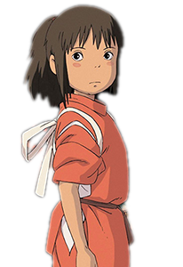
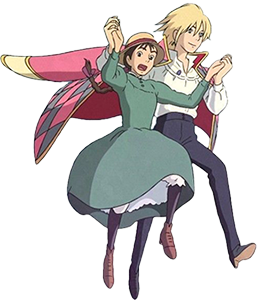
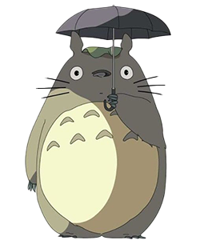
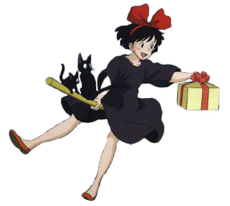
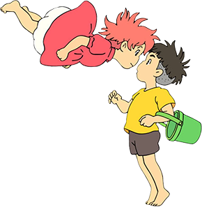

El viaje de Chihiro
Chihiro es una niña de diez años, algo caprichosa y refunfuñona, que acaba de dejar su ciudad. Con sus padres, está viajando a un nuevo lugar donde establecerse. Durante el viaje los padres de Chihiro deciden parar a descansar y atraviesan un túnel. Desde ahí se desarrolla una historia fantástica donde Chihiro tendrá que luchar contra sus miedos y limitaciones. Para liberar a sus padres de un encantamiento que les puede costar la vida y que les ha convertido en cerdos, la niña se irá encontrando con toda una galería de personajes fantásticos que le ensañaran una serie de valores imprescindibles, no solo para conseguir sus propósitos en el mundo fantástico en el que se ha metido, sino para toda la vida. Chihiro va a descubrir el valor de la amistad, el valor de la reconciliación y el valor de la fe, y esto le va a ayudar a una capacidad de afrontar los retos que se le presentan.
El increible castillo vagabundo
Sophie, una sombrerera de 18 años, es una chica responsable y llana que va a la panadería a visitar a su hermana menor Lettie cuando se encuentra por casualidad con un misterioso mago llamado Howl. Su efímero encuentro despierta la furia de la malvada Bruja del Páramo, que más tarde arriva hasta la sombrerería y transforma a Sophie en una anciana de 90 años. Como la maldición le impide contar su estado, Sophie decide irse y buscar una cura. Lo hace cuidadosamente ya que su madrastra, Fanny, se encuentra cerca.
Mi vecino Totoro
'Mi vecino Totoro' cuenta la historia de dos niñas, Satsuki y Mei, que se mudan con su padre a una casa que se encuentra cerca del bosque, mientras su madre está recuperándose de tuberculosis en un sanatorio rural, al llegar a su nuevo hogar descubren a unas criaturas llamadas "conejos de polvo o duendes del ojin”. Un día Mei, mientras cortaba flores, se encuentra con dos pequeños seres que la llevarán directo a Totoro o como su padre lo llama, él 'Rey del bosque', sin embargo, solamente las personas de corazón puro son las que pueden verlas. Después Satsuki conocería a Totoro, en una escena que pasaría a ser de las más icónicas de toda la película, y al Gatobús. Conforme pasa el tiempo los encuentros con el rey del bosque se hacen más frecuentes, pero un día llega una carta de parte del sanatorio por lo que Satsuki sale corriendo, y debido a los problemas que se han suscitado, Mei se va de la casa por lo que su hermana va a buscarla, pero al no encontrarla recurrirá a pedir ayuda a Totoro para hacer que regrese sana y salva.
Kiki: entregas a domicilio
A instancias de su madre, la joven bruja Kiki, de 13 años, emprende un aprendizaje de un año con su gato negro Jiji de compañía. Todavía es un poco inexperta y testaruda, pero también ingeniosa, imaginativa y decidida, así que siente que está lista para enfrentarse al mundo. Con un comando tembloroso de su escoba, termina en una pequeña y encantadora ciudad costera. Desafortunadamente, los hoteles locales tienen una estricta política de "no brujas" y la policía, que ha tenido una visión débil de la reciente travesura aérea de Kiki, ahora la está buscando. Ella es salvada por la amable esposa de un panadero, quien le ofrece alojamiento y comida a cambio de que ella entregue en escoba las mercancías del panadero. En Kiki entregas a domicilio vemos como la vida de la joven bruja empieza a estar bien hasta que un día se despierta y se da cuenta de que no puede hacer que su escoba levite ni puede hablar con su gato.
Ponyo y el secreto de la sirenita
Sosuke, un niño de cinco años, vive en lo más alto de un acantilado que da al mar. Una mañana, mientras juega en una playa rocosa que hay bajo su casa, se encuentra con una ‘pececita’ de colores llamada Ponyo, con la cabeza atascada en un tarro de mermelada. Sosuke la rescata y la guarda en un cubo verde de plástico. Sin embargo, el padre de Ponyo, Fujimoto, que en otro tiempo fue humano y ahora es un hechicero que vive en lo más profundo del océano, la obliga a regresar con él a las profundidades del mar.
